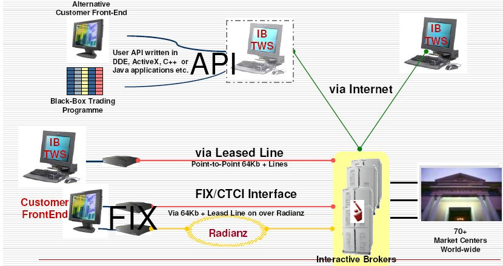

IB Application Programming Interfaces
Table of Contents
Overview
IB offers several alternatives for connecting directly to our trading system, including:
- A proprietary Application Program Interface (API) which operates through the Trader Workstation and does not require additional technical overhead such as a dedicated FIX server.
- An industry standard FIX solution for customers who can support a FIX Computer-to-Computer Interface (CTCI) infrastructure.
Our CTCI connection supports FIX versions 4.1 and 4.2, with support for selected 4.3, 4.4 and custom IB tags

http://www.bearcave.com/software/market_trading/resources_and_notes/
FIX CTCI1
FIX CTCI Connection Types
- Internet Standard connection through public internet. Requires IB Gateway connection interface.
- Extranet A T1 line routed to one of IB's extranet providers, Radianz TNS or Savvis. They route directly to IB over a secure private line.
- VPN IB supports a dedicated Virtual Private Network (VPN) tunnel from the client's data center directly to one of IB's Data Centers. A VPN provides a secure method of connecting over the public Internet without the need to maintain a dedicated leased line or extranet connection.
- Dedicated Line Client pays for a T1 line that connects directly to one of IB's Data Centers, which are located throughout the world. A dedicated lease line connects users directly into the IB system and facilitates a quicker and more secure connection than a regular Internet line.
- Cross-Connect Equinix NY4 colocation facility (tier 4 datacenter) is located in Secaucus, New Jersey. IB has a client point of presence at this datacenter. Clients who are also located in this datacenter can order a cross-connect from the datacenter to IB's client facing servers there. The client is responsible for the costs of the cross-connect. Once the cross-connect is ordered by the client (with NY4), IB's network engineers will work with the client and the datacenter.
IB Discussion Boards
IB API2
Enable TWS to support the C++ API
Now look up at the top of the trading window, and you'll see the menu
bar. Click the Edit menu, and then click Global Configuration. In the
Configuration window, click APIin the left pane, then click Settings,
which reveals several options on the right side of the window. Check
the Enable ActiveX and Socket Clients check box and click OK.